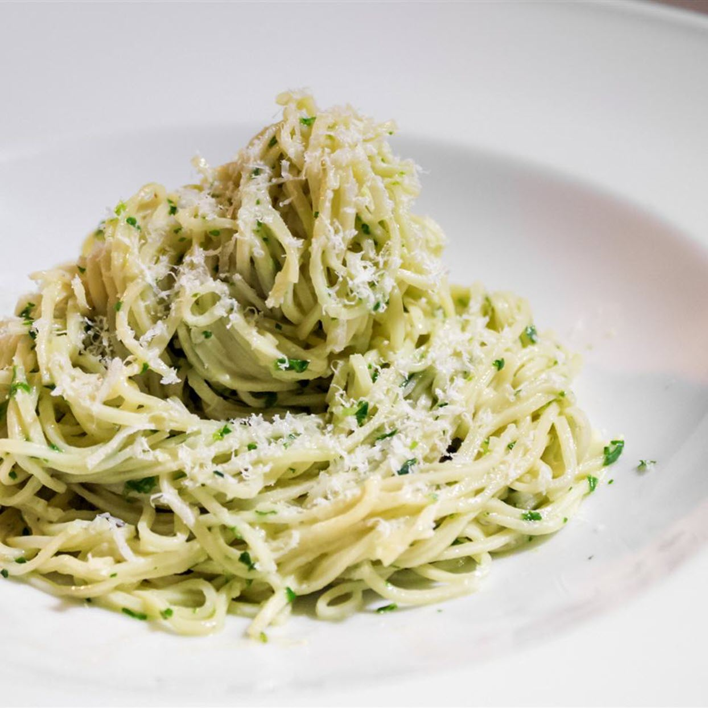

Pesto Pasta

Easy to make, but full of flavor! Good hot or cold.
Ingredients
- 1/2 cup chopped onion
- 2 1/2 tablespoons pesto
- 2 tablespoons olive oil
- 2 tablespoons grated Parmesan cheese
- 1 (16 ounce) package pasta
- salt to taste
- ground black pepper to taste
Steps
- Cook pasta in a large pot of boiling water until done Drain.
- Meanwhile, heat the oil in a frying pan over medium low heat. Add pesto, onion, and salt and pepper. Cook about five minutes, or until onions are soft.
- In a large bowl, mix pesto mixture into pasta. Stir in grated cheese. Serve.